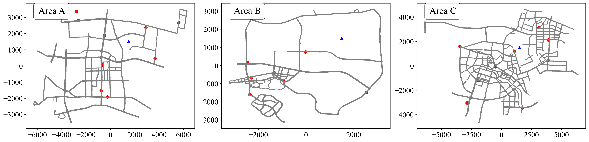

Abstract
Unmanned Sanitation Vehicles (USVs) offer promising solutions for cleaner cities, yet effectively coordinating multiple vehicles across expansive urban areas poses significant operational challenges, including constraints on waste storage and battery endurance. In this demonstration, we introduce MRTC, a sophisticated two‑stage collaborative operation system. Initially, Dynamic Task Assignment utilizes an Actor–Critic policy embedded within a Markov Decision framework to strategically allocate cleaning tasks and determine optimal fleet sizes. Subsequently, the Single‑USV Path Planning phase optimizes individual vehicle routes via an efficient two‑layer iterative refinement process. Our extensive eight‑month real‑world deployment across three urban testbeds—Area A (12×9 km), Area B (6×6 km), and Area C (12×10 km)—has demonstrated that MRTC significantly enhances operational efficiency and reduces costs. Key achievements include managing an impressive combined route distance of 10,775 km per month, achieving substantial monthly savings of 20,575 kWh in energy consumption, and reducing labor requirements by 2,744 hours.
Demonstration Video
MRTC Deployment & Digital Twin Cloud Platform
Since April 2024, MRTC has been deployed across three areas in collaboration with a USV supplier.
To ensure safe and reliable real-world operations, we utilize a Digital Twin Cloud Platform to simulate and monitor USV driving paths.
This platform acts as the control center for MRTC, dispatching assigned routes to USVs and collecting operational data via the cellular network.
After departing from the depot (shown in (a)), the L4 AD algorithm controls the USV's operations and obstacle avoidance in working mode (shown in (a)).
When the USV's garbage bin nears full capacity, it proceeds to the designated dump site to dispose of the waste (shown in (a)). Similarly, when the water tank is low, the USV heads to the replenishment point (shown in (d)).
In each deployment area—Area A (12 km × 9 km, 1,019 road segments), Area B (6 km × 6 km, 667 road segments), and Area C (12 km × 10 km, 680 road segments)—the system manages a network of road segments. For efficient operation, the charge station, supply station, and garbage spot are co-located (red points), while blue triangles indicate the warehouse locations. The photos below show MRTC's on-site USV operations, including depot departure, autonomous driving, waste disposal, and water replenishment.
Over eight months, MRTC achieved average monthly driving distances of 3,598 km, 3,888 km, and 3,289 km in the three areas, respectively. The system also demonstrated significant resource savings, with average monthly reductions of 20,575 kWh in energy consumption and 2,744 working hours.
Autonomous Cleaning System Overview
Figure 1 illustrates the complete pipeline of our autonomous sanitation vehicle (USV): (a) the onboard autonomous driving controller; (b) the brushes and sweepers in action; (c) real-time telemetry streamed back over the cellular network; and (d) multi-angle remote camera feeds for situational awareness.
Figure 2 shows our cloud-based management dashboard. Operators can manage routine and dynamic tasks, monitor events, and track each USV’s location, status, and historical operation via an interactive map, filterable vehicle list, and time-aligned trajectory timeline.
Deployment City Road Network
We evaluate the performance of our proposed MRTC across three deployment areas in different cities. 
Real-world deployment results
- Total driving distance: 10 775 km / month
- Energy savings: 20 575 kWh / month
- Labor savings: 2 744 hours / month
USV Parameters
| Parameter | Value |
|---|---|
| Endurance Mileage | 150 km |
| Maximum Speed | 30 km/h |
| Water Tank Capacity | 100 L |
| Operation Range | Main Road |
| Duration Limit per Time | 1.5 h |
| Average Speed | 5 – 15 km/h |
| Maintenance Duration | 0.5 h |